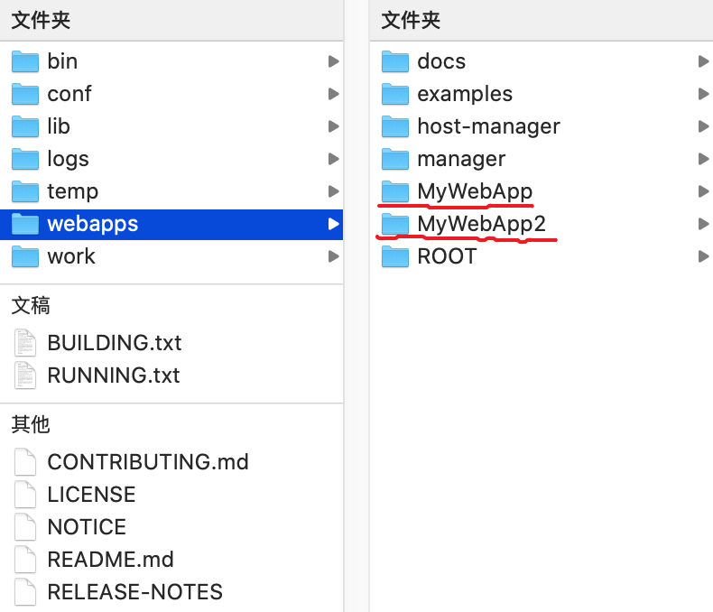
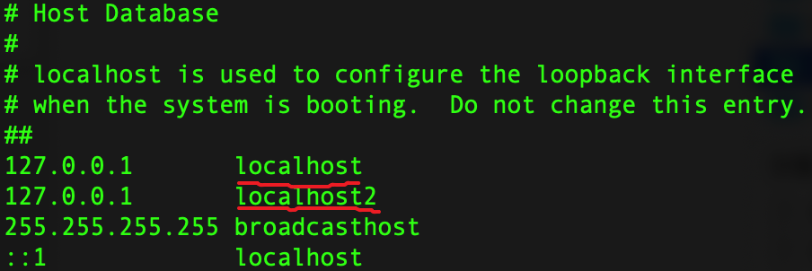
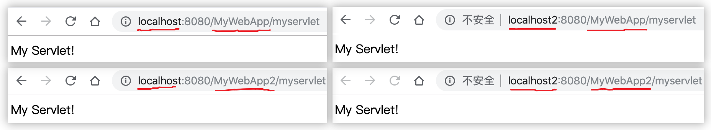
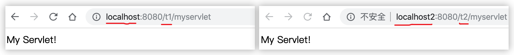
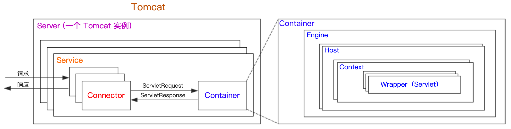
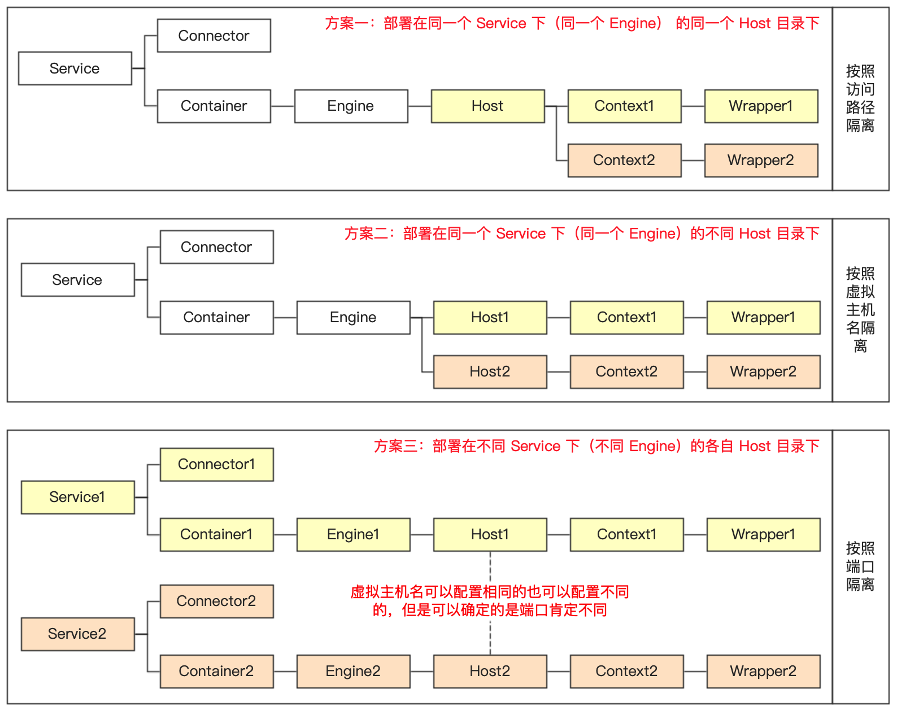
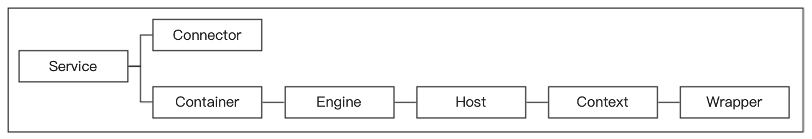

1 默认配置文件 基于 Tomcat 8.5.46 的 conf 目录下的 server.xml 配置文件：
conf/server.xml 去除掉注释信息后文件内容 1 2 3 4 5 6 7 8 9 10 11 12 13 14 15 16 17 18 19 20 21 22 23 24 25 26 27 28 29 30 31 32 33 34 35 <?xml version="1.0" encoding="UTF-8"?> <Server port ="8005" shutdown ="SHUTDOWN" > <Listener className ="org.apache.catalina.startup.VersionLoggerListener" /> <Listener className ="org.apache.catalina.core.AprLifecycleListener" SSLEngine ="on" /> <Listener className ="org.apache.catalina.core.JreMemoryLeakPreventionListener" /> <Listener className ="org.apache.catalina.mbeans.GlobalResourcesLifecycleListener" /> <Listener className ="org.apache.catalina.core.ThreadLocalLeakPreventionListener" /> <GlobalNamingResources > <Resource name ="UserDatabase" auth ="Container" type ="org.apache.catalina.UserDatabase" description ="User database that can be updated and saved" factory ="org.apache.catalina.users.MemoryUserDatabaseFactory" pathname ="conf/tomcat-users.xml" /> </GlobalNamingResources > <Service name ="Catalina" > <Connector port ="8080" protocol ="HTTP/1.1" connectionTimeout ="20000" redirectPort ="8443" /> <Connector port ="8009" protocol ="AJP/1.3" redirectPort ="8443" /> <Engine name ="Catalina" defaultHost ="localhost" > <Realm className ="org.apache.catalina.realm.LockOutRealm" > <Realm className ="org.apache.catalina.realm.UserDatabaseRealm" resourceName ="UserDatabase" /> </Realm > <Host name ="localhost" appBase ="webapps" unpackWARs ="true" autoDeploy ="true" > <Valve className ="org.apache.catalina.valves.AccessLogValve" directory ="logs" prefix ="localhost_access_log" suffix =".txt" pattern ="%h %l %u %t "%r" %s %b" /> </Host > </Engine > </Service > </Server >
2 多个端口指向同一个应用 绑定多个 Connector 在上面的 server.xml 中添加：
conf/server.xml 1 <Connector port ="8081" protocol ="HTTP/1.1" connectionTimeout ="20000" redirectPort ="8443" />
重新启动 Tomcat，如果有服务要重启服务，就会发现也可以用 127.0.0.1:8081 访问 8080 的项目。
3 不同域名指向同一主机上的不同项目 3.1 应用准备 复制 webapps 目录下的 MyWebApp 命名为 MyWebApp2（当做不同应用）：

3.2 域名解析设置 将两个不同的域名解析到同一个 IP 地址上，这个 IP 地址就是服务器的 IP 地址。

3.3 服务端设置 修改 Tomcat 文件目录下 conf/server.xml 文件：
conf/server.xml 1 2 3 4 5 6 7 8 9 10 11 <Host name ="localhost" appBase ="webapps" unpackWARs ="true" autoDeploy ="true" > <Context path ="" docBase ="MyWebApp" /> <Valve className ="org.apache.catalina.valves.AccessLogValve" directory ="logs" prefix ="localhost_access_log" suffix =".txt" pattern ="%h %l %u %t "%r" %s %b" /> </Host > <Host name ="localhost2" appBase ="webapps" unpackWARs ="true" autoDeploy ="true" > <Context path ="" docBase ="MyWebApp2" /> <Valve className ="org.apache.catalina.valves.AccessLogValve" directory ="logs" prefix ="localhost_access_log" suffix =".txt" pattern ="%h %l %u %t "%r" %s %b" /> </Host >
3.4 结果验证 此时去访问应用，会出现以下几种结果：

这是为什么呢？先保留，我们先修改成我们希望的样子只需修改 Context 的 path 属性：
conf/server.xml 1 2 <Context path ="t1" docBase ="MyWebApp" /> <Context path ="t2" docBase ="MyWebApp2" />
这样就可以实现通过指定域名访问不通项目了。

4 经典问题 Tomcat 架构设计图：

那么如果我有两个应用需要部署，只有一个 Tomcat 实例，那么根据 Tomcat 的架构设计图以下三种部署方案：

其中方案一的比较简单，方案二可以参考不同域名指向同一主机上的不同项目 ，方案三可以参考：Tomcat 配置多个 Service，多个同名的应用运行在一个 tomcat 下 ，至于部署的是相通应用还是不同应用无关紧要。
当然随着分布式服务的流行，Tomcat 都是内嵌于 SpringBoot 应用中的，所以目前对于 SpringBoot 中关于 Tomcat 的架构流程猜想如下。
